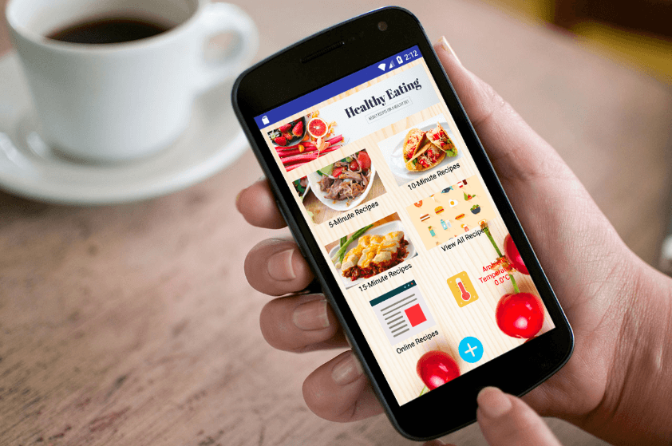

F&H Recipes is an convenient food recipes application that enbale users to store home-made food recipes and get diverse recipes based on preperation time and preferences.
After reading the project description, I started brainstorming on the application and its purpose.
The application has to benefit its users and all functionality achieved within 6 weeks; keeping
that in mind, I made a project document to list out its basic and standard functionalities that
I think that are achievable, and a structure of the application showing all the activities (interface)
as shown above. I also designed the time frame options, so the user can select different time
frames (e.g. under 5 mins) and get recipes on how to make a quick and healthy meals within that
time frame.
In terms of development, I used both implicit and explicit intents for switching between internal
activities and external activities, preferences and SQLite as database for storing user information
and recipes. I used webview for user to view and search recipe on external website. The application
allows the user to add new recipes and save to the local database. The hardware of device like
camera, sensor, and sound are used for taking pictures and sending notification to the user.
Process: site map and early prototype
This was an exciting project as it’s my first mobile application. I was able to use knowledge that I learned from the mobile computing course, search for solutions and solve problems I encounter during the process. My main struggle with this application was converting the image file and retrieve it later in the added recipe. Because I spent quite some time on this part, I couldn’t complete the user profile and FAQ feature, and I learned that should have asked for help and moved on to other tasks to improve my efficiency. The user interface of this application is functional, but I would like to sketch wireframes and make high fidelity mockups if I had more time. As an individual project, I had to set the scope of project, complete individual tasks for each week, and test the final application. I really enjoyed the development process.
Final: F&H final version